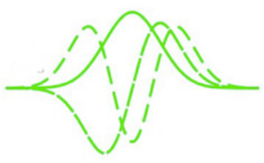
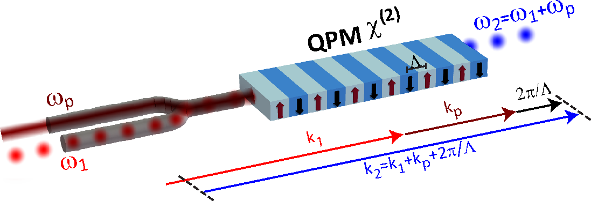
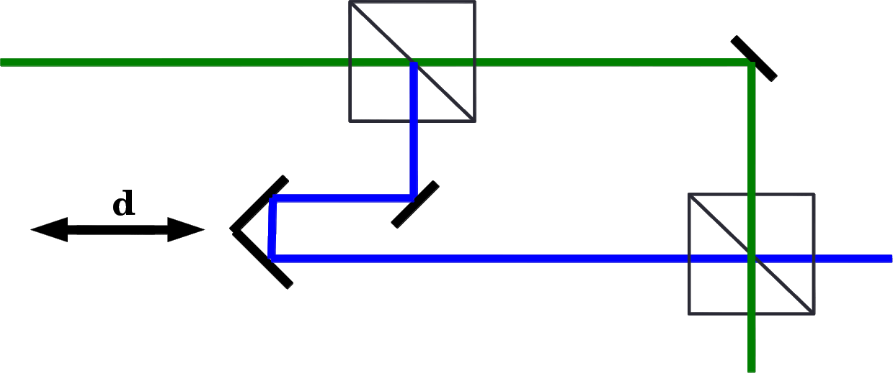
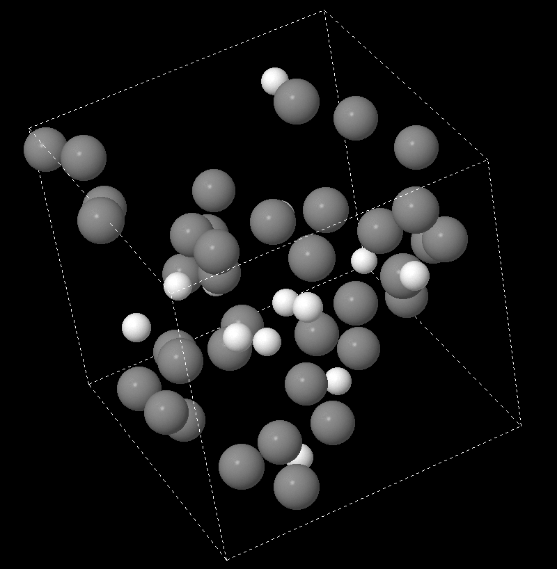

Academic pursuits
Here's where I put up descriptions and musings about some topics that I professionally (as in get paid to) worry about. Please refer to my CV in the "About" section for a list of publications.
Temporal modes

The quantum wave functions of photons are essentially identical to the classical mode functions they populate. This allows for wave-packet quantization of light, and opens up a "new" Hilbert space for information storage, retrieval, and manipulation. In simple terms, two photons with the same central frequency and time-of-arrival, with matching polarizations and transverse spatial-beam profiles, can still have orthogonal pulse shapes, i.e. complex envelope functions of their modes in the direction of propagation. These have been the central topic of my grad-research.
Nonlinear wave mixing

Image Source. Pedagogically speaking, interference in radiation patterns of dipole antennas is an amazing technical topic for instruction. It spans a diverse range of phenomena and relies on very rudimentary Euclidean visualization skills in the pupils. I've been experimenting on combining this with basic concepts of Fourier transforms to create a self-contained teaching module for nonlinear wave mixing in non-resonantly excited media. My continued efforts will be updated in this tab.
Neutrino rumble

Image Source. In the standard model of physics, neutrinos come in three flavors: electron-, muon-, and tau-neutrino. But the flavors that are produced in processes aren't necessarily the flavors that are detected (if indeed we can separate these two occurences as different events). That is because the mass eigenstates and flavor eigenstates are not identical! I've been under the dillusion (for some time now) of this being exploitable in an experiment that could reveal the absolute masses of said states (which are still not known). My quixotic exploration of this has brought up some interesting questions about the nature of interaction and the measurement problem. I'll try and keep this tab updated as and when new things come up.
Quantum-shwantum

Quantum physics is the prime subject that can train one to intuitively grasp a description of reality (or a procedural truth-claims generator) that is not based on our innate Newtonian/Darwinian instinct. While its predictions are fantastical, since it is a mathematical theory, all the mystery can be reduced/collapsed to a handful of (perhaps two) base, quirky phenomena (not unique). The phenominological reduction is more suited to teaching, and readily allows for alternative postulates, representations, and interpretations to sprout forth. Hence, my interest.
Classical stat-mech

A simple 8:2 mixture of two slightly dissimilar classical atoms at large enough densities can behave in strange ways when one attempts to cool them to a low enough temperature. Plotting the mean-squared displacements of the particles for various timescales reveals a sluggishness in short-term movement, suggesting a free-energy barrier. It has been hypothesized that the free-energy landscape for glass translations is fractalian in feature sizes. Apart from helping to touch base with undergrad stat-mech, and dealing with efficiently sampling transient events, this also makes for a great practice problem to learn parallel GPU programming with.